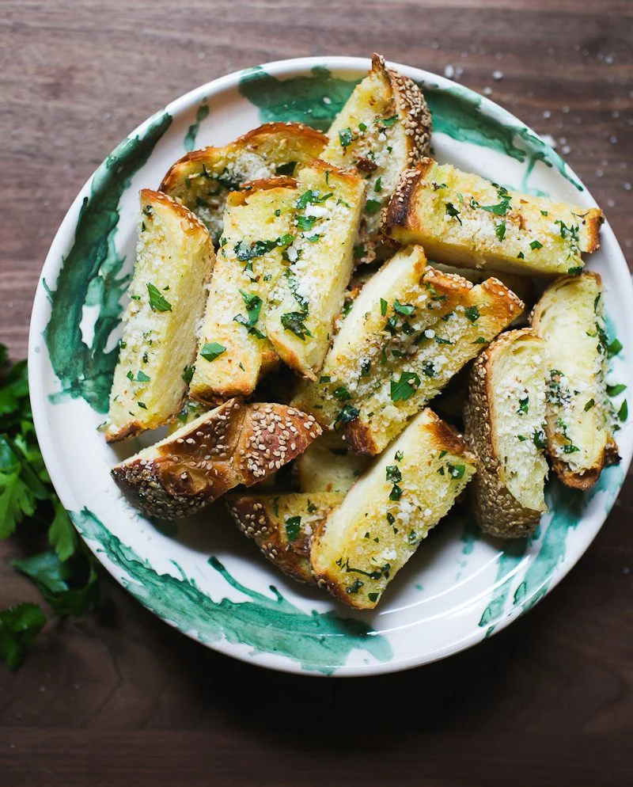

Garlic Bread

Cutting the bread like a Hasselback potato keeps the butter from
seeping out and allows the garlic to infuse the bread with its flavor without scorching.
Ingerdients:
- ½cup/8 tablespoons unsalted butter, melted / room tempture
- Whole garlic
- ½cup Parmesan, grated
- ¼cup firmly packed chopped flat-leaf parsley
- ¼teaspoon Salt and Black pepper
- 2 Zucchinis
- 1baguette or rustic crusty loaf
- ½pound fresh mozzarella, thinly sliced -- optional
Steps
- Heat the oven to 400 degrees. peel the gralic, wrap in a aluminium
foil with some oil, salt and pepper and put in the oven for 15 mins. Bake the gralic while you cut the baguette./li>
- take out the graclic and stir together the butter, garlic, and parsley
- Cut deep slits into the baguette, 1-inch apart — dont cut all the way through the loaf — and place the baguette on a
large piece of foil. Using a teaspoon or an offset spatula, generously spread the seasoned butter inside each slit.
Make sure to reach the bottom of the slit; dont be shy here.
- Add the Parmesan in between the loaf slices, be generous
- Wrap the baguette in the foil, place on a baking sheet and bake for 15 minutes. Remove the baguette from the oven
and unwrap the top (leave the bread on the foil). Return bread to the oven and bake until crisp and golden on top,
another 5 minutes. Slice with a serrated knife (or tear with your hands) and serve at once.